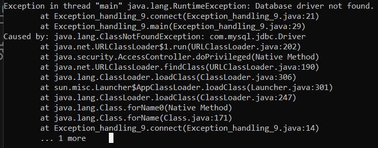

Exception Handling 9 - Write a Java program to manage the driver with path, username and password, if not successful then throw an exception
import java.sql.Connection;
import java.sql.DriverManager;
import java.sql.SQLException;
public class Exception_handling_9 {
private static final String DB_URL = "jdbc:mysql://localhost:3306/your_database";
private static final String DB_USER = "your_username";
private static final String DB_PASS = "your_password";
public static Connection connect() throws SQLException {
Connection connection = null;
try {
// Load the database driver
Class.forName("com.mysql.jdbc.Driver");
// Establish the database connection
connection = DriverManager.getConnection(DB_URL, DB_USER, DB_PASS);
return connection;
} catch (ClassNotFoundException e) {
throw new RuntimeException("Database driver not found.", e);
} catch (SQLException e) {
throw new SQLException("Failed to connect to the database.", e);
}
}
public static void main(String[] args) {
try {
Connection connection = connect();
if (connection != null) {
System.out.println("Connected to the database successfully.");
// Perform database operations here
connection.close(); // Don't forget to close the connection when done.
}
} catch (SQLException e) {
System.err.println("Database connection failed: " + e.getMessage());
e.printStackTrace();
}
}
}
Output
